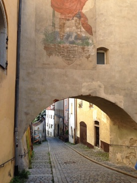
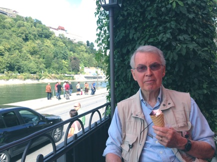

Travel


Enjoying some ice cream before returning to ship
Passau, known as the “City of Three Rivers,” Passau lies at the confluence of the Inn, the Danube and the Ilz Rivers--it is the last major German city on the Danube at the border of Austria. Originally a settlement of the Boii Celtic tribe and named “Boiodurum,” it was later the site of the Roman fort, Castra Batava. In 739, an English Celtic monk named Boniface founded the diocese of Passau, the largest see of the Holy Roman Empire for many years.
Passau was an important medieval center for the salt trade. The White Gold, as it was called, was transported from the Alpine salt mines to Passau where it was processed by entrepreneurs called Salzfertiger. These city merchants established a powerful monopoly, until 1707 when all salt imports to Passau were forbidden and the once flourishing city lost tis valuable trade.
During the Renaissance, Passau became famous for making high-quality knife and sword blades. Local smiths stamped their blades with the Passau wolfe, and superstitious warriors believed that the wolf ranted them invulnerability. The practice of placing magical, protective charms on blades became known as “Passau art.”
When fires ravaged the city in the 17th century, it was rebuilt to reflect the baroque character that survives today. Old Town, with its baroque churches and patrician houses, is crowded oto the narrow tongue of land separating the In and the Danube. St. Stephen’s Cathedral is one of the town’s foremost landmarks and boasts the largest pipe organ outside the United States. Northward on th far bank of the Danube, the Veste Oberhause rises atop a wooded bluff.
St Stephen’s Cathedral: An acoustical delight
Passau’s magnificent baroque St. Stephen’s Cathedral is located on the highest point of Old Town. Nearly destroyed in the 1662 fire that swept through the town, it was rebuilt by architect Carloa Lurago, with magnificent stucco works by G.B. Carolone and frescoes by Carpoforus Teencalls.
St Stephen’s is home to the largest cathedral organ in the word, with 17,974 organ pipes, 233 stops and four carillons. Al five parts of the organ can be played from the main keyboard, one at a time or all together, offering the visitor an unforgettable acoustical delight. You may be lucky enough (we were!) to hear an organ concert on this magnificent instrument if you are visiting Passau between April and October, Monday through Saturday.